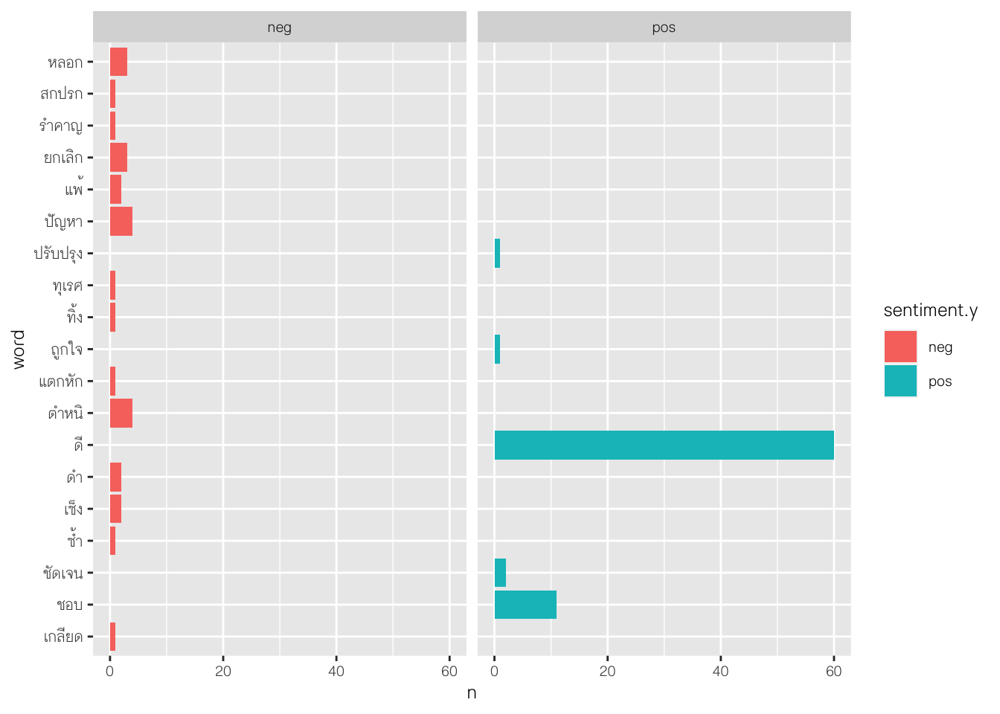
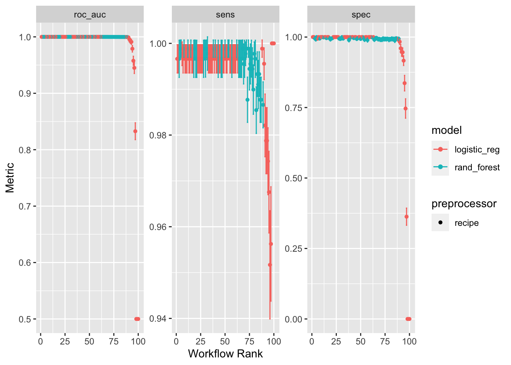
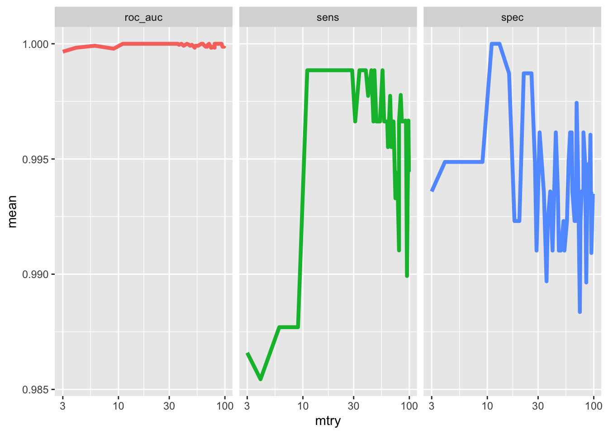
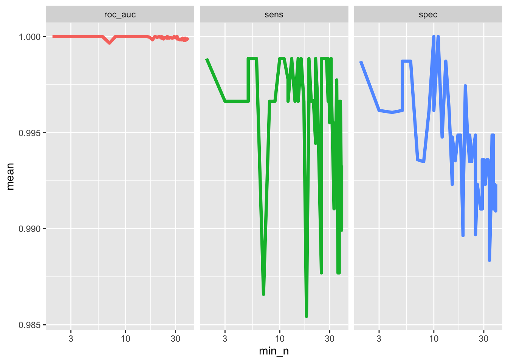
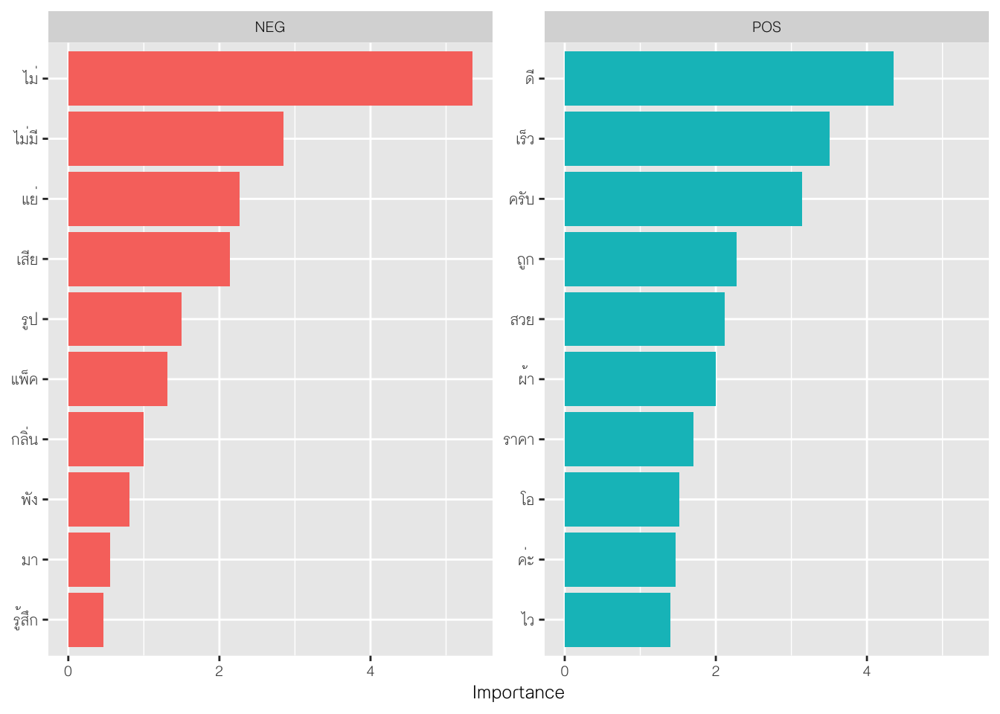

library(dplyr)
library(tidyr)
library(tidytext)
library(readxl)Text Analytics
การวิเคราะห์ข้อความเป็นวิธีการวิเคราะห์ข้อมูลที่มีวัตถุประสงค์หลักคือเพื่อสกัดสารสนเทศที่มีความหมายออกมาจากข้อมูลแบบข้อความ ซึ่งเป็นข้อมูลแบบไม่มีโครงสร้างประเภทหนึ่ง การวิเคราะห์ข้อมูลสามารถจำแนกได้เป็นหลายประเภท ตามวัตถุประสงค์ของการวิเคราะห์ได้แก่
sentiment analysis
topic modeling
text classification
text summarization
relationship extraction
trend analysis
keyword extraction
เนื้อหาในส่วนนี้จะกล่าวถึงการวิเคราะห์ในบางตัวที่มีการใช้ ML เข้ามาช่วย รายละเอียดมีดังนี้
Sentiment analysis
การวิเคราะห์ความรู้สึก (sentiment analysis) เป็นการวิเคราะห์เพื่อวินิจฉัยอารมณ์หรือความรู้สึกของกลุ่มเป้าหมายโดยใช้ข้อความที่ได้จากการพูด การเขียน โดยปกติการวิเคราะหความรู้สึกจะให้สารสนเทศของความรู้สึกเป็น อารมณ์เชิงบวก เชิงลบ หรือกลาง ๆ นอกจากนี้ยังอาจจำแนกความรู้สึกให้ละเอียดได้ตามต้องการ เช่น โกรธ กลัว ขยะแขยง หรือ ดีใจ
ปัจจุบันมีการพัฒนาการวิเคราะห์ความรู้สึกหลายวิธีการ ซึ่งแต่ละวิธีการจะมีความเหมาะสมที่แตกต่างกัน ขึ้นอยู่กับลักษณะของปัญหา และลักษณะของข้อมูลที่ผู้วิเคราะห์มี วิธีการที่มีการใช้กันในปัจจุบัน ได้แก่
- lexicon-bases methods: การประเมินความรู้สึกด้วยวิธีการนี้จะประเมินโดยอิงจากฐานข้อมูลของคำที่ได้มีการให้คะแนนความรู้สึก (sentiment score) เอาไว้ก่อนหน้าแล้ว เรียกฐานข้อมูลดังกล่าวว่า lexicons วิธีการนี้จะนำคะแนนความรู้สึกของคำแต่ละคำภายในประโยคที่สนใจมาหาค่าเฉลี่ย และสรุปแนวโน้มของอารมณ์ความรู้สึกจากค่าเฉลี่ยดังกล่าว
- machine learning methods: วิธีการนี้มีการใช้อัลกอริทึมการเรียนรู้ของเครื่องเข้ามาช่วย หลักการคร่าว ๆ คือ ผู้วิเคราะห์จะต้องมีชุดข้อมูลฝึกหัดและทดสอบที่มีการให้ label กับข้อความเอาไว้ก่อนหน้า แล้วใช้ชุดข้อมูลดังกล่าวในการพัฒนาโมเดลทำนายอารมณ์ความรู้สึกจากข้อความ
- deep learning methods: วิธีการนี้มีความคล้ายกับ ML methods แต่อัลกอริทึมที่ใช้ในการทำนายจะเป็นอัลกอริทึมในกลุ่ม deep learning เช่น RNNs, LSTM วิธีการนี้ถึงแม้จะเป็นวิธีการที่มีประสิทธิภาพสูง แต่มีข้อจำกัดคือต้องการข้อมูลขนาดใหญ่ในการวิเคราะห์
- hybrid methods: เป็นวิธีการที่บูรณาการร่วมกันระหว่าง 3 วิธีการข้างต้น เช่น ผู้วิเคราะห์อาจใช้ lexicon-based ในกระบวนการ data preprocess และใช้อัลกอริทึมการเรียนรู้ของเครื่องเพื่อพัฒนาโมเดลทำนาย
Lexicon-based methods
การวิเคราะห์ความรู้สึกด้วยวิธีการนี้สามารถทำใน R ได้หลายวิธี วิธีการหนึ่งที่แนะนำคือการใช้ package tidytext ข้อดีของการใช้ package ดังกล่าวคือสามารถใช้ grammar เดียวกับการทำงานบน tidyverse ซึ่งง่ายต่อการจัดกระทำ วิเคราะห์ นำเสนอและเชื่อมโยงกับเครื่องมือต่าง ๆ ที่จำเป็น ก่อนการดำเนินการวิเคราะห์จำเป็นต้องติดตั้งและเรียกใช้ package ต่อไปนี้ก่อน
ชุดข้อมูลตัวอย่างที่ใช้
dat <- read.csv("https://raw.githubusercontent.com/PyThaiNLP/thai-sentiment-analysis-dataset/master/review_shopping.csv",
header=F, col.names = c("text","sentiment"),
sep = "\t")
dat$id <- 1:dim(dat)[1]
head(dat) text
1 เกลียด ชอบหลอกให้สั่งซื้อ ที่ไหนได้ไม่มีสิ้นค้า
2 สินค้าด้อยคุณภาพ
3 สินค้าหมดทำไมไม่แจ้งขึ้นว่าหมดอะ.กดใส่ตะกร้าไปเถอะ.เซ็งเรย
4 อย่าทำแบบนี้กับใครอีกนะค่ะแย่มากค่ะ
5 คือเเบบผิดหวังมาก เเย่ที่สุดได้ของมาฝาเเตก เเตกนิดหน่อยไม่ว่าเเตกเยอะมาก ครั้งเดียวพอจบเเยก😢
6 ส่งช้าจัง รอนานมาก ยกเลิกก้อไม่ได้
sentiment id
1 neg 1
2 neg 2
3 neg 3
4 neg 4
5 neg 5
6 neg 6glimpse(dat, width=60)Rows: 128
Columns: 3
$ text <chr> "เกลียด ชอบหลอกให้สั่งซื้อ ที่ไหนได้ไม่มีสิ้นค้า", "สิน…
$ sentiment <chr> "neg", "neg", "neg", "neg", "neg", "neg"…
$ id <int> 1, 2, 3, 4, 5, 6, 7, 8, 9, 10, 11, 12, 1…สร้าง dictionary สำหรับประเมินอารมณ์ความรู้สึกของข้อความ
neg<- read.csv("https://raw.githubusercontent.com/PyThaiNLP/lexicon-thai/master/%E0%B8%82%E0%B9%89%E0%B8%AD%E0%B8%84%E0%B8%A7%E0%B8%B2%E0%B8%A1/neg.txt", header = F, col.names = "word")
pos <- read.csv("https://raw.githubusercontent.com/PyThaiNLP/lexicon-thai/master/%E0%B8%82%E0%B9%89%E0%B8%AD%E0%B8%84%E0%B8%A7%E0%B8%B2%E0%B8%A1/pos.txt", header = F, col.names = "word")
neg$sentiment <- "neg"
pos$sentiment <- "pos"
lexicon <- neg %>% bind_rows(pos)
head(lexicon) word sentiment
1 ไม่ neg
2 ไม่เรื่อง neg
3 ทำกลับไม่ neg
4 ช่างเลวจริงๆ neg
5 ผลงานย่ำแย่จนใกล้ตกชั้น neg
6 อึดอัดไม่รัก negdim(lexicon)[1] 1063 2lexicon <- distinct(lexicon)
dim(lexicon)[1] 1037 2Tokenization
จากลักษณะของ lexicon-based method ที่ต้องมีการเปรียบเทียบคำในชุดข้อมูลกับพจณานุกรมเพื่อให้คะแนน sentiment ของคำแต่ละคำภายในแต่ละข้อความ ผู้วิเคราะห์จึงจำเป็นต้องตัดข้อความในชุดข้อมูลออกเป็นคำย่อย ๆ ก่อนที่จะดำเนินการวิเคราะห์ กระบวนการตัดคำดังกล่าวเรียกว่า tokenization
ใน package tidytext การตัดคำสามารถทำได้ด้วยฟังก์ชัน unnest_tokens() ฟังก์ชันดังกล่าวมีอาร์กิวเมนท์สำคัญได้แก่ tbl คือชุดข้อมูลแบบ data.frame ที่เก็บข้อความทั้งหมด token ใช้กำหนดหน่วยของการตัดคำ เช่น words , ngrams, skip_ngrams , sentences, lines หรือ paragraphs
library(reticulate)
# Import pythainlp library
pythainlp <- import("pythainlp")
# Define a custom tokenization function for textrecipes
tokenize_thai <- function(text) {
tokens <- lapply(text, pythainlp$word_tokenize, engine="deepcut")
tokens_list <- lapply(tokens, function(x) {
paste(x, collapse = " ")})
tokens_list <- unlist(tokens_list)
return(tokens_list)
}
## tokenized via mutate function
temp<-dat %>%
mutate(token = tokenize_thai(text))
head(temp) text
1 เกลียด ชอบหลอกให้สั่งซื้อ ที่ไหนได้ไม่มีสิ้นค้า
2 สินค้าด้อยคุณภาพ
3 สินค้าหมดทำไมไม่แจ้งขึ้นว่าหมดอะ.กดใส่ตะกร้าไปเถอะ.เซ็งเรย
4 อย่าทำแบบนี้กับใครอีกนะค่ะแย่มากค่ะ
5 คือเเบบผิดหวังมาก เเย่ที่สุดได้ของมาฝาเเตก เเตกนิดหน่อยไม่ว่าเเตกเยอะมาก ครั้งเดียวพอจบเเยก😢
6 ส่งช้าจัง รอนานมาก ยกเลิกก้อไม่ได้
sentiment id
1 neg 1
2 neg 2
3 neg 3
4 neg 4
5 neg 5
6 neg 6
token
1 เกลียด ชอบ หลอก ให้ สั่ง ซื้อ ที่ ไหน ได้ ไม่ มี สิ้นค้า
2 สินค้า ด้อย คุณภาพ
3 สินค้า หมด ทำไม ไม่ แจ้ง ขึ้น ว่า หมด อะ. กด ใส่ ตะกร้า ไป เถอะ . เซ็งเรย
4 อย่า ทำ แบบ นี้ กับ ใคร อีก นะ ค่ะ แย่ มาก ค่ะ
5 คือ เเบบ ผิด หวัง มาก เเย่ ที่สุด ได้ ของ มาฝาเเตก เเตก นิดหน่อย ไม่ว่า เเตก เยอะ มาก ครั้ง เดียว พอ จบ เเยก 😢
6 ส่ง ช้า จัง รอ นาน มาก ยกเลิก ก้อ ไม่ ได้tokenized_dat <- temp %>%
unnest_tokens(input = token, token = "words",
output = word)
glimpse(tokenized_dat, width=60)Rows: 1,790
Columns: 4
$ text <chr> "เกลียด ชอบหลอกให้สั่งซื้อ ที่ไหนได้ไม่มีสิ้นค้า", "เก…
$ sentiment <chr> "neg", "neg", "neg", "neg", "neg", "neg"…
$ id <int> 1, 1, 1, 1, 1, 1, 1, 1, 1, 1, 1, 1, 1, 2…
$ word <chr> "เกลียด", "ชอบ", "หลอก", "ให้", "สั่ง", "ซื้อ"…stopword
Stopwords คือคำที่ไม่ให้ความหมายหรือไม่มีประโยชน์ในการตีความหมายของประโยคหรือข้อความเป้าหมาย เช่น a, and, the, และ หรือ อะ ซึ่งในชุดข้อมูลหากมีคำประเภทนี้อยู่มาก ๆ จะกลายเป็น noise ที่รบกวนการวิเคราะห์ ใน library pythainlp มีการรวบรวม stopwords สำหรับภาษาไทยเอาไว้พอสมควร ผู้วิเคราะห์สามารถนำมาใช้ได้ การเรียก stopword จาก pythinlp มาใช้สามารถทำได้ในทำนองเดียวกับการตัดคำดังนี้
def stop word():
import pythainlp
stopword = pythainlp.corpus.common.thai_stopwords()
stopword = list(stopword)
return stopwordการเรียก stopword จาก pythainlp ออกมาใช้สามารถทำได้ดังนี้ จะเห็นว่าชุดข้อมูล stopword ดังกล่าวรวบรวมคำไว้จำนวน 1,030 คำ
source_python("stopword.py")
length(stopword())[1] 1030head(stopword(),10) [1] "เสีย" "เผื่อที่" "โดย" "ทั้งที" "ได้ที่" "ด้วยเหตุนั้น"
[7] "เกี่ยวกับ" "เรื่อย" "ระยะ" "คล้ายว่า" tail(stopword(),10) [1] "แม้กระทั่ง" "ต่อ" "คราที่" "ถึงอย่างไร" "ส่วนเกิน" "ทุกที่"
[7] "เมื่อวาน" "ข้างต้น" "ค่ะ" "ใหญ่" tokenized_dat<-tokenized_dat %>%
filter(!word %in% stopword()) %>%
filter(!word %in% c("ค่ะ","ครับ"))
tokenized_dat %>% dim()[1] 747 4sentiment_dat <- tokenized_dat %>%
inner_join(lexicon, by="word")
glimpse(sentiment_dat, width=60)Rows: 102
Columns: 5
$ text <chr> "เกลียด ชอบหลอกให้สั่งซื้อ ที่ไหนได้ไม่มีสิ้นค้า", "…
$ sentiment.x <chr> "neg", "neg", "neg", "neg", "neg", "ne…
$ id <int> 1, 1, 1, 3, 6, 10, 12, 13, 14, 14, 15,…
$ word <chr> "เกลียด", "ชอบ", "หลอก", "เซ็ง", "ยกเลิก"…
$ sentiment.y <chr> "neg", "pos", "neg", "neg", "neg", "po…calculate sentiment score
library(ggplot2)
sentiment_dat %>%
mutate(sentiment_score = ifelse(sentiment.y=="pos",1,-1)) %>%
group_by(id) %>%
summarise(sentiment_score = sum(sentiment_score)) %>%
ggplot(aes(x=sentiment_score))+
geom_histogram(bins=5, col="white")
sentiment_dat %>%
mutate(sentiment_score = ifelse(sentiment.y=="pos",1,-1)) %>%
# group_by(id, word) %>%
count(word, sentiment.y, sort = TRUE) %>%
ggplot(aes(x=n, y=word, fill=sentiment.y))+
geom_col()+
facet_wrap(~sentiment.y)+
theme(text=element_text(family="ChulaCharasNew"))
Machine Learning based
ตัวอย่างส่วนนี้จะวิเคราะห์ sentiment ด้วยอัลกอริทึม ML ชุดข้อมูลที่ใช้จะใช้ชุดข้อมูลตัวอย่างเดียวกับตัวอย่างแรก โดยใช้ label ที่อยู่ในคอลัมน์ sentiment ที่มาพร้อมกับชุดข้อมูลดังกล่าวเพื่อสร้าง train model
library(tidyverse)
library(tidymodels)
library(textrecipes)
glimpse(dat, width=60)Rows: 128
Columns: 3
$ text <chr> "เกลียด ชอบหลอกให้สั่งซื้อ ที่ไหนได้ไม่มีสิ้นค้า", "สิน…
$ sentiment <chr> "neg", "neg", "neg", "neg", "neg", "neg"…
$ id <int> 1, 2, 3, 4, 5, 6, 7, 8, 9, 10, 11, 12, 1…การสร้างโมเดลทำนายในตัวอย่างนี้จะใช้กรอบของ tidymodels โดยก่อนที่จะดำเนินการวิเคราะห์ ผู้วิเคราะห์จะดำเนินการตัดคำที่ไม่เกี่ยวข้องบ้างส่วนก่อน
pythainlp <- import("pythainlp")
# Define a custom tokenization function for textrecipes
tokenize_thai <- function(text) {
tokens <- lapply(text, pythainlp$word_tokenize, engine="newmm")
tokens_list <- lapply(tokens, function(x) {
paste(x, collapse = " ")})
tokens_list <- unlist(tokens_list)
return(tokens_list)
}
## tokenized via mutate function
temp<-dat %>%
mutate(token = tokenize_thai(text))
head(temp) text
1 เกลียด ชอบหลอกให้สั่งซื้อ ที่ไหนได้ไม่มีสิ้นค้า
2 สินค้าด้อยคุณภาพ
3 สินค้าหมดทำไมไม่แจ้งขึ้นว่าหมดอะ.กดใส่ตะกร้าไปเถอะ.เซ็งเรย
4 อย่าทำแบบนี้กับใครอีกนะค่ะแย่มากค่ะ
5 คือเเบบผิดหวังมาก เเย่ที่สุดได้ของมาฝาเเตก เเตกนิดหน่อยไม่ว่าเเตกเยอะมาก ครั้งเดียวพอจบเเยก😢
6 ส่งช้าจัง รอนานมาก ยกเลิกก้อไม่ได้
sentiment id
1 neg 1
2 neg 2
3 neg 3
4 neg 4
5 neg 5
6 neg 6
token
1 เกลียด ชอบ หลอก ให้ สั่งซื้อ ที่ไหนได้ ไม่ มี สิ้น ค้า
2 สินค้า ด้อย คุณภาพ
3 สินค้า หมด ทำไม ไม่ แจ้ง ขึ้น ว่า หมด อะ .กด ใส่ ตะกร้า ไป เถอะ . เซ็ง เรย
4 อย่า ทำ แบบนี้ กับ ใคร อีก นะ ค่ะ แย่มาก ค่ะ
5 คือ เเบบ ผิดหวัง มาก เเย่ ที่สุด ได้ ของ มา ฝา เ เตก เ เตก นิดหน่อย ไม่ ว่า เ เตก เยอะ มาก ครั้ง เดียว พอ จบ เ เย ก😢
6 ส่ง ช้า จัง รอ นาน มาก ยกเลิก ก้อ ไม่ ได้tokenized_dat <- temp %>%
unnest_tokens(input = token, token = "words",
output = word)
# remove stopwords
source_python("stopword.py")
length(stopword())[1] 1030head(stopword(),10) [1] "เสีย" "เผื่อที่" "โดย" "ทั้งที" "ได้ที่" "ด้วยเหตุนั้น"
[7] "เกี่ยวกับ" "เรื่อย" "ระยะ" "คล้ายว่า" tail(stopword(),10) [1] "แม้กระทั่ง" "ต่อ" "คราที่" "ถึงอย่างไร" "ส่วนเกิน" "ทุกที่"
[7] "เมื่อวาน" "ข้างต้น" "ค่ะ" "ใหญ่" tokenized_dat<-tokenized_dat %>%
filter(!word %in% stopword()) %>%
filter(!word %in% c("ค่ะ","ครับ","เ","เตก","อะ","10","ป","ก๊อ",
"ๆๆๆๆ","ๆ","ๆๆๆ","ๆๆ","ใด","ค","ร",
"ส","ง","วจะ"))
glimpse(tokenized_dat, width=60)Rows: 743
Columns: 4
$ text <chr> "เกลียด ชอบหลอกให้สั่งซื้อ ที่ไหนได้ไม่มีสิ้นค้า", "เก…
$ sentiment <chr> "neg", "neg", "neg", "neg", "neg", "neg"…
$ id <int> 1, 1, 1, 1, 1, 1, 2, 2, 2, 3, 3, 3, 3, 3…
$ word <chr> "เกลียด", "ชอบ", "หลอก", "สั่ง", "ซื้อ", "ค้า"…นำชุดข้อมูลข้างต้นมา train ในตัวอย่างนี้จะใช้ 2 โมเดลได้แก่ logistic regression และ random forest
การสร้างโมเดลทำนายอารมณ์ความรู้สึก (sentiment) ด้วยข้อความจะใช้คำ/วลี/ประโยคภายในข้อความที่ผ่านการจัดระเบียบและทำความสะอาดแล้วมาสร้างเป็น feature matrix สำหรับทำนาย feature matrix ของข้อความดังกล่าวจะมีลักษณะคือ แถวเป็นข้อความเต็มที่มีความหมายบวกหรือลบหรืออื่น ๆ ส่วนคอลัมน์เป็นความถี่ของคำแต่ละคำที่ปรากฎอยู่ภายในแต่ละข้อความ เมทริกซ์ดังกล่าวมีสามประเภท ได้แก่ Term Frequency matrix (TF matrix), Inverse Document Frequency matrix (IDF matrix) และ TF-IDF matrix รายละเอียดมีดังนี้
- TF matrix เป็นเมทริกซ์ที่ใช้แสดงความถี่ของการเกิดคำแต่ละคำภายในข้อความ/เอกสารเป้าหมาย โดยส่วนใหญ่ค่าความถี่ดังกล่าวจะรายงานเป็นร้อยละการพบคำดังกล่าวเทียบกับข้อความทั้งหมด หากมีแนวโน้มที่จะพบคำที่แตกต่างกันภายในข้อความ/เอกสารที่แตกต่างประเภทกัน แสดงว่ามีความสัมพันธ์กันระหว่างคำที่ใช้กับข้อความ ผู้วิเคราะห์สามารถใช้ความสัมพันธ์ดังกล่าวมาสร้างเป็นโมเดลทำนายได้
- IDF matrix เป็นเมทริกซ์ที่ให้ค่าน้ำหนัก/ความสำคัญของคำแต่ละคำภายในข้อความ/เอกสารเป้าหมายทั้งหมด (เรียกว่า corpus) ค่าน้ำหนักดังกล่าวมีค่าเท่ากับ \(log(n)/n_j\) เมื่อ \(n\) คือจำนวนข้อความทั้งหมด และ \(n_j\) คือจำนวนข้อความที่พบคำที่ \(j\) จากค่าน้ำหนักดังกล่าวจะเห็นว่า หากคำ ๆ ใดพบมากพบบ่อยในหลาย ๆ ข้อความ แสดงว่าคำนั้นเป็นคำทั่วไปและมีแนวโน้มที่จะมีความสามารถในการจำแนกข้อความที่มีความแตกต่างกันได้ยาก ในทางกลับกันคำ ๆ ใดที่พบน้อยแสดงว่าเป็นคำเฉพาะสำหรับข้อความบางประเภท ดังนั้นคำดังกล่าวจึงมีแนวโน้มที่จะใช้จำแนกข้อความที่มีความแตกต่างกันได้ดีกว่า
- TF-IDF matrix เป็นเมทริกซ์ที่รวมสูตรการคำนวณระหว่าง TF และ IDF matrix โดย TF-IDF จะคำนวณน้ำหนักของคำโดยใช้ ผลคูณระหว่าง TF กับ IDF วิธีการนี้จึงทำให้สามารถระบุน้ำหนักของคำต่าง ๆ ภายใต้ข้อความเป้าหมายได้ครอบคลุมมิติทั้งในด้านความบ่อยและความสำคัญไปได้พร้อมกัน โดยปกติ TF-IDF matrix เป็นเทคนิคที่ใช้มากกว่าสองเมทริกซ์ข้างต้น
set.seed(123)
split<-initial_split(tokenized_dat, strata = sentiment)
train<-training(split)
test<-testing(split)
## create preprocessing recipe
train_rec <- recipe(sentiment~text, data=train) %>%
step_tokenize(text) %>%
step_stopwords(text) %>%
step_tokenfilter(text) %>%
step_tfidf(text) %>%
step_normalize(all_numeric_predictors())
## model specification 1
lasso_spec <- logistic_reg(penalty = tune(), mixture = 1) %>%
set_engine("glmnet")
## model specification 2
rf_spec <- rand_forest(mtry = tune(),
trees=300,
min_n=tune()) %>%
set_engine("ranger",importance = "permutation") %>%
set_mode("classification")
## create workflowset
wf_set <- workflow_set(
preproc = list(train_rec),
models = list(lasso_spec, rf_spec)
)
## training
doParallel::registerDoParallel()
set.seed(321)
folds <- vfold_cv(train, v = 10, repeats = 3, strata = sentiment)
result <- workflow_map(
wf_set,
resamples = folds,
grid = 50,
control = control_grid(save_pred = T),
metrics = metric_set(roc_auc, sens,spec)
)i Creating pre-processing data to finalize unknown parameter: mtryautoplot(result)
ผลการวิเคราะห์ข้างต้นแสดงให้เห็นว่าทั้งสองโมเดลสามารถทำนายได้อยู่ในระดับที่ดีขึ้นไป โดย random forest เป็นโมเดลที่ทำนายได้ดีมากที่สุด
result %>%
collect_metrics() %>%
filter(.metric == "roc_auc") %>%
arrange(desc(mean))# A tibble: 100 × 9
wflow_id .config preproc model .metric .esti…¹ mean n std_err
<chr> <chr> <chr> <chr> <chr> <chr> <dbl> <int> <dbl>
1 recipe_logistic_reg Prepro… recipe logi… roc_auc binary 1 30 0
2 recipe_logistic_reg Prepro… recipe logi… roc_auc binary 1 30 0
3 recipe_logistic_reg Prepro… recipe logi… roc_auc binary 1 30 0
4 recipe_logistic_reg Prepro… recipe logi… roc_auc binary 1 30 0
5 recipe_logistic_reg Prepro… recipe logi… roc_auc binary 1 30 0
6 recipe_logistic_reg Prepro… recipe logi… roc_auc binary 1 30 0
7 recipe_logistic_reg Prepro… recipe logi… roc_auc binary 1 30 0
8 recipe_logistic_reg Prepro… recipe logi… roc_auc binary 1 30 0
9 recipe_logistic_reg Prepro… recipe logi… roc_auc binary 1 30 0
10 recipe_logistic_reg Prepro… recipe logi… roc_auc binary 1 30 0
# … with 90 more rows, and abbreviated variable name ¹.estimatorลองพิจารณาประสิทธิภาพของโมเดล random forest ภายใต้ hyperparameters ที่กำหนด
result %>%
extract_workflow_set_result(id = "recipe_rand_forest") %>%
collect_metrics() %>%
ggplot(aes(mtry, mean, color = .metric)) +
geom_line(size = 1.5, show.legend = FALSE) +
facet_wrap(~.metric) +
scale_x_log10()Warning: Using `size` aesthetic for lines was deprecated in ggplot2 3.4.0.
ℹ Please use `linewidth` instead.
result %>%
extract_workflow_set_result(id = "recipe_rand_forest") %>%
collect_metrics() %>%
ggplot(aes(min_n, mean, color = .metric)) +
geom_line(size = 1.5, show.legend = FALSE) +
facet_wrap(~.metric) +
scale_x_log10()
ผลการวิเคราะห์ส่วนแรกจะใช้ ML เพื่อทำ sentiment analysis ดังนั้นการใช้ logistic regression จะเหมาะสมกว่า random forest (เพราะอะไร?)
## the best logistic model
best<-result %>%
extract_workflow_set_result(id = "recipe_logistic_reg") %>%
show_best(n=1, metric = "roc_auc")
best# A tibble: 1 × 7
penalty .metric .estimator mean n std_err .config
<dbl> <chr> <chr> <dbl> <int> <dbl> <chr>
1 1.11e-10 roc_auc binary 1 30 0 Preprocessor1_Model01## extract logistic regressionworkflow
logit_wf <- wf_set%>%
extract_workflow(id = "recipe_logistic_reg")
final_logit <- logit_wf %>%
finalize_workflow(best)
final_logit══ Workflow ════════════════════════════════════════════════════════════════════
Preprocessor: Recipe
Model: logistic_reg()
── Preprocessor ────────────────────────────────────────────────────────────────
5 Recipe Steps
• step_tokenize()
• step_stopwords()
• step_tokenfilter()
• step_tfidf()
• step_normalize()
── Model ───────────────────────────────────────────────────────────────────────
Logistic Regression Model Specification (classification)
Main Arguments:
penalty = 1.10842563201833e-10
mixture = 1
Computational engine: glmnet ## sentiment analysis
library(vip)
Attaching package: 'vip'The following object is masked from 'package:utils':
vifinal_logit %>%
last_fit(split) %>%
extract_fit_engine() %>%
vi() %>%
group_by(Sign) %>%
top_n(10, wt = abs(Importance)) %>%
ungroup() %>%
mutate(
Importance = abs(Importance),
Variable = str_remove(Variable, "tfidf_text_"),
Variable = fct_reorder(Variable, Importance)
) %>%
ggplot(aes(x = Importance, y = Variable, fill = Sign)) +
geom_col(show.legend = FALSE) +
facet_wrap(~Sign, scales = "free_y") +
labs(y = NULL)+
theme(text=element_text(family="ChulaCharasNew"))
ลองสร้างโมเดลทำนายจาก random forest
## the best random forest
best<-result %>%
extract_workflow_set_result(id = "recipe_rand_forest") %>%
show_best(n=1, metric = "roc_auc")
best# A tibble: 1 × 8
mtry min_n .metric .estimator mean n std_err .config
<int> <int> <chr> <chr> <dbl> <int> <dbl> <chr>
1 83 12 roc_auc binary 1 30 0 Preprocessor1_Model01## extract logistic regressionworkflow
rf_wf <- wf_set%>%
extract_workflow(id = "recipe_rand_forest")
final_rf <- rf_wf %>%
finalize_workflow(best)
final_rf══ Workflow ════════════════════════════════════════════════════════════════════
Preprocessor: Recipe
Model: rand_forest()
── Preprocessor ────────────────────────────────────────────────────────────────
5 Recipe Steps
• step_tokenize()
• step_stopwords()
• step_tokenfilter()
• step_tfidf()
• step_normalize()
── Model ───────────────────────────────────────────────────────────────────────
Random Forest Model Specification (classification)
Main Arguments:
mtry = 83
trees = 300
min_n = 12
Engine-Specific Arguments:
importance = permutation
Computational engine: ranger ## create model using whole training dataset
rf_lastfit <-final_rf %>%
last_fit(split, metrics=metric_set(roc_auc, sens,spec))ประสิทธิภาพของโมเดลทำนายเป็นดังนี้
rf_lastfit %>%
collect_metrics()# A tibble: 3 × 4
.metric .estimator .estimate .config
<chr> <chr> <dbl> <chr>
1 sens binary 1 Preprocessor1_Model1
2 spec binary 1 Preprocessor1_Model1
3 roc_auc binary 1 Preprocessor1_Model1ทดลองทำนายชุดข้อมูลใหม่
new_dat <- c("ซื้อมาแล้วใช้งานไม่ได้เลย",
"ถ้าราคาถูกกว่านี้จะดีมาก",
"แพคกล่องมาแย่มาก แต่ของไม่เสีย")
new_dat <- tibble(text = new_dat)
rf_lastfit %>%
extract_workflow() %>%
predict(new_data= new_dat)# A tibble: 3 × 1
.pred_class
<fct>
1 neg
2 pos
3 neg กิจกรรมพัฒนาโมเดลตรวจการบ้าน
ขอให้นิสิตตอบคำถามต่อไปนี้
พิจารณาผลการวิเคราะห์การถดถอยด้านล่าง โดยตัวแปรตามคือเงินเดือนอาจารย์ และตัวแปรอิสระคือประสบการณ์ทำงานของอาจารย์มหาวิทยาลัย
salary <- read.csv("/Users/siwachoat/Downloads/Salary_Data (1).csv")
head(salary) Experience Salary
1 1.1 39343
2 1.3 46205
3 1.5 37731
4 2.0 43525
5 2.2 39891
6 2.9 56642fit <- lm(Salary ~ Experience, data= salary)
summary(fit)
Call:
lm(formula = Salary ~ Experience, data = salary)
Residuals:
Min 1Q Median 3Q Max
-7958.0 -4088.5 -459.9 3372.6 11448.0
Coefficients:
Estimate Std. Error t value Pr(>|t|)
(Intercept) 25792.2 2273.1 11.35 5.51e-12 ***
Experience 9450.0 378.8 24.95 < 2e-16 ***
---
Signif. codes: 0 '***' 0.001 '**' 0.01 '*' 0.05 '.' 0.1 ' ' 1
Residual standard error: 5788 on 28 degrees of freedom
Multiple R-squared: 0.957, Adjusted R-squared: 0.9554
F-statistic: 622.5 on 1 and 28 DF, p-value: < 2.2e-16ตอบคำถามที่นี่ —> https://forms.gle/PAXJzC1DjoiibpKE8
dat<-read_excel("answer.xlsx")
glimpse(dat, width=60)Rows: 203
Columns: 5
$ Timestamp <dttm> 2022-10-31 17:15:09, 2022-10-31 20:45:…
$ student_id <dbl> 1, 2, 3, 4, 5, 6, 7, 8, 9, 10, 11, 12, …
$ section <dbl> 2, 8, 2, 4, 7, 2, 8, 6, 1, 5, 1, 3, 3, …
$ answer <chr> "ถ้าประสบการณ์ทำงานของคุณครูเพิ่มสูงขึ้น 1 ปี จะส่…
$ result <chr> "correct", "correct", "wrong", "correct…ขอให้นิสิตใช้ข้อมูลข้างต้นเพื่อพัฒนาโมเดลทำนายสำหรับตรวจข้อสอบข้อเขียน